Created by Di Luo, last modified on Oct 08, 2018
Description:
In Project 5, I need to create a collage, in which some pictures cover each other. In order to do so, I need to create a program that processes a list defining a collage and builds the resulting image. The collage list information can specify if the program should apply an effect and/or an alpha blend to each image. In order to achieve the final goal, I created a collage list of lists containing all the information of the images and I can also specify if the program should apply an effect or an alpha blend to each image. I also created a few new functions. The readImage function reads in the files in the collage and stores the Image objects in the list; getImageSize and buildCollage functions process the collage list information and build the output image. The placeImageNoBkg function is identical to placeImage function but it only transfers non-green screen pixels into the destination image.
Task 1
First, I created a collage list that contains a few lists. Each inner list contains the essential information of each image that is input, such as:
- Filename of the image
- X offset in the collage
- Y offset in the collage
- Effect for the image
- Alpha blend value
- The Image object (after being read from a file)
I also wrote a function getImageSize helping the program to determine how big the background image should be to contain all the images. In order to do so I created two variables rows and cols that keep track of the biggest number the function sees in the collage list that represents the bottom row and the rightmost col of an image in the collage.
Task 2
Second, I added another term into each sublist, which is a Boolean NoBkg that determines if the green background of the image should be removed when the image is placed into the collage. Then I created the function buildCollage to put each image that is modified by alpha bleed, filters and other elements into the background to create a collage. Some images overlapped with others.
Task 3
Then I created a function placeImageNoBkg that is identical to placeImage function but it only transfers non-green screen pixels into the destination image.
Task 4
After that, I added a if statement at the end of the buildCollage function to determine whether to call placeImage or placeImageNoBkg.
Task 5
Then I created a new file mycollage.py, in which I created a collage information list, called readImages, called buildCollage, then wrote the image to a file mycollage.ppm. Six different source images were included and were input from command line arguments, different effects and alpha blend were used to modify the original picture so that they looks different and can overlap with each other since pictures are half-transparent under the effect of alpha blend.
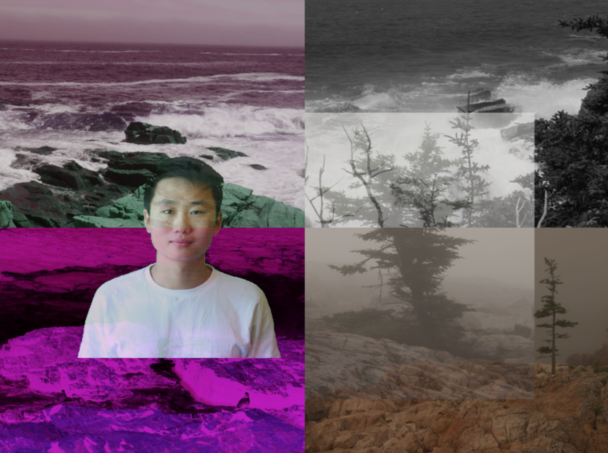(Required picture 1)
Task 6
Finally, I created another new file named coverphoto.py, in which three different pictures were input from command line arguments to create a FB cover photo and the photo was stored in the file cover photo.ppm. The collage is three times as wide as it is tall and the three images overlapped with each other to create the collage. Random effects were chosen for each images.
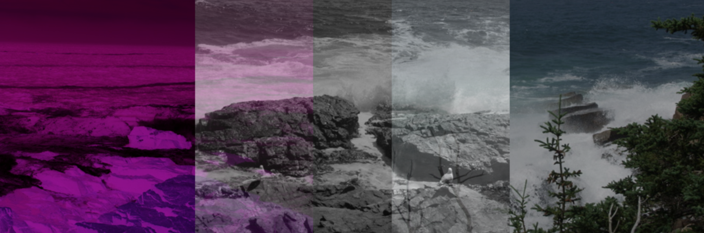(Required picture 2)
Extensions
For extensions, first I wrote a group of print statements in getImageSize function to acquire the width and height of each image.
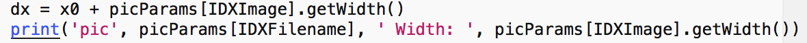
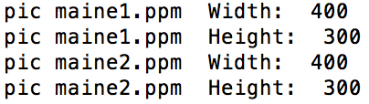
Second, I created new filters swapRGB, which swaps all three colors, and inverse, which changes the color from (r, g, b) to (255-r, 255-g, 255-b) and slightly changed the darker filter from Project 4. I also used the grayScale filter which is more complex than others.
Third, I enabled the placeImageNoBkg function to handle both the blue and green screens. (the file blueDi.ppm is blue screen and the file greenDi.ppm is green screen)
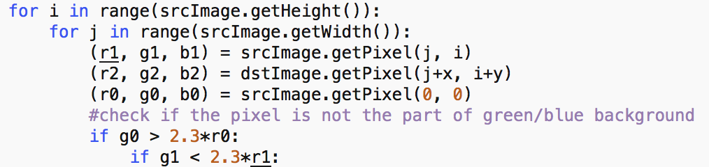
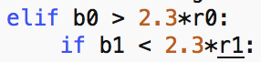
Fourth, I made an additional program in extensions.py that generated a collage with triangle arrangement.
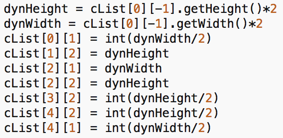
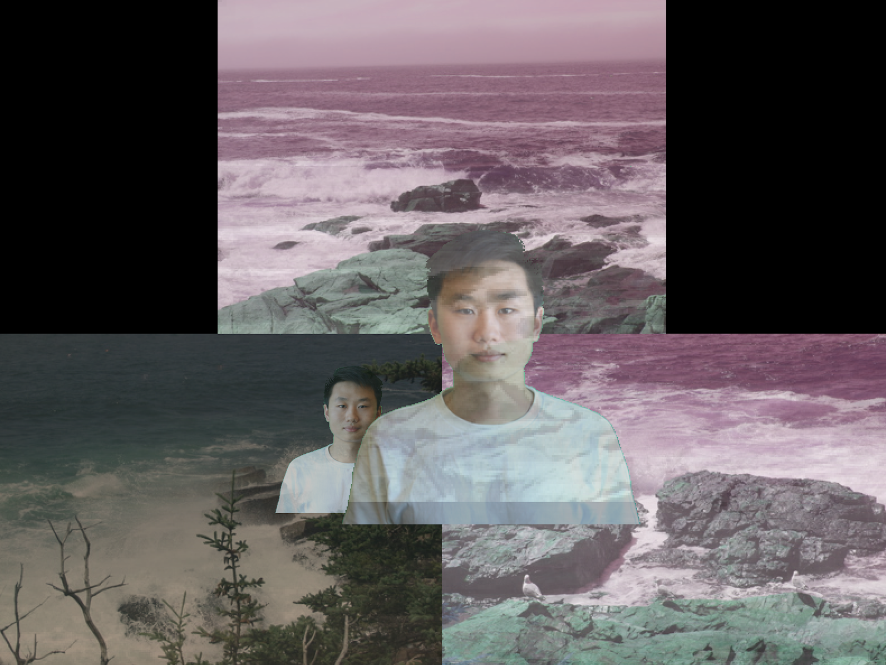
Fifth, I add an additional option mirror to the collage information list. It is a boolean and when it is True, the image would be mirrored, like the two portraits in the picture above.
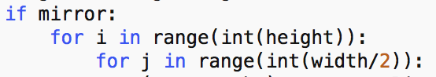
Sixth, I added an additional term scale2 to the collage information list. It is also a boolean and when it is True, the size of the image would be doubled. To achieve that I also needed to modify other functions, such as getImageSize, buildCollage, placeImage and placeImageNoBkg. Lots of if statements were used to determine the size of the background when the images are doubled, and to determine whether the image should be doubled.
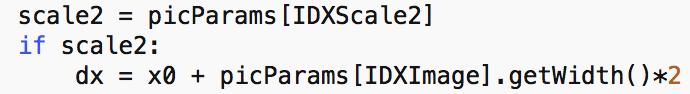
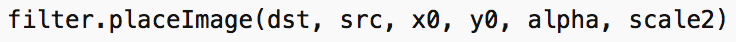
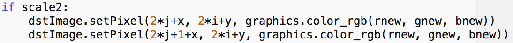
Seventh, I created a list for filters so that I can randomly choose different groups of filters for the images in my collage.
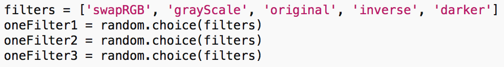
Reflection
In this project, I reviewed the knowledge I learned in class and lab, including but not only Zelle graphics package, parameters, loops, conditional statements, lists, random statement and command line arguments. I learned how to create a list of lists that stores the information of each image into each sublist so that when I created a collage I can specify the offset location, alpha blend, filter of each image with the terms in the sublist and store the source image in the last term of each sublist. When I need to create a collage, I can easily run the function buildCollage to use the information in the list to conveniently create the collage. I also learned how to determine if a specific part should be placed into the collage.
Source
I worked on this project by myself.
{kind=link}
{kind=link}
{kind=link}
{kind=link}
{kind=link}
{kind=link}
{kind=link}
{kind=link}
{kind=link}
{kind=link}
{kind=link}
{kind=link}
{kind=link}
{kind=link}
{kind=link}
{kind=link}
{kind=link}
{kind=link}
{kind=link}